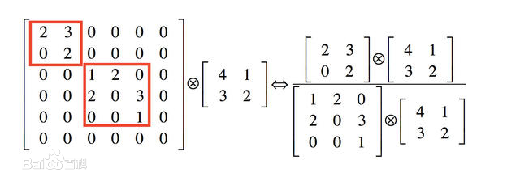
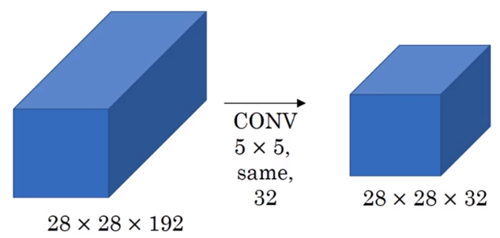
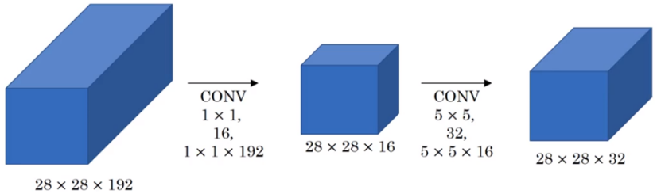
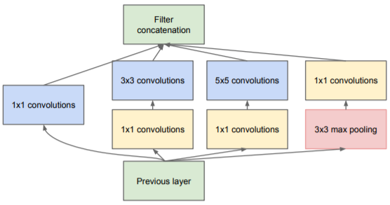
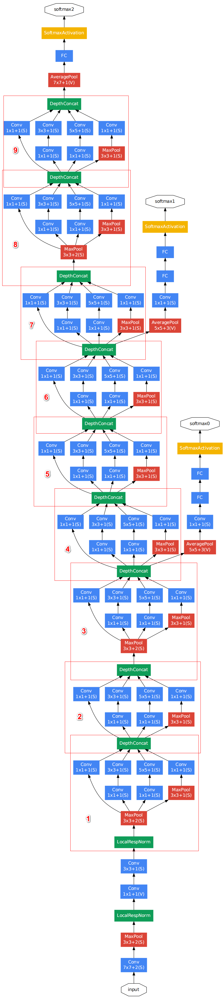
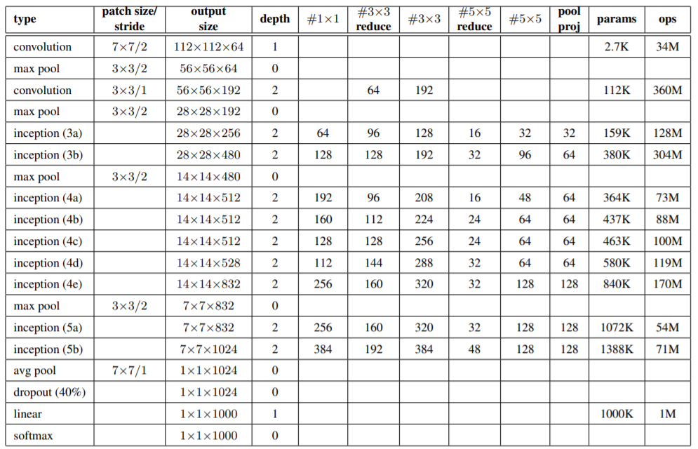

概述
提高网络性能最直接的方法就是构建更深更大的模型，但直接增加模型的深度和宽度往往会带来以下问题：
- 过拟合问题。模型过大，参数过多，如果没有足够的数据用于训练，过拟合问题将十分严重。
- 计算成本。宽度和深度的增加必然会带来计算成本的剧增，实用性是一个必须考虑的问题。
解决上述问题的基本方法就是用稀疏连接替代稠密连接，但计算机对于稀疏连接的计算是十分低效的（查找和缓存开销大），解决这个问题的办法就是将稀疏矩阵聚类成多个稠密的子矩阵进行计算。在这种思想的指导下，GoogLeNet诞生了，并一举拿下ILSVRC-2014分类竞赛冠军，达到了Top-5 6.67%的错误率。
GoogLeNet的名字一方面是因为来源于谷歌，另一方面也是对LeNet-5的致敬。为了解决过拟合和计算成本问题，该模型提出了极具创意的结构——Inception，在论文中，作者还引用了同名电影Inception（盗梦空间）中的图：We Need To Go Deeper，这也表明了GoogLeNet和Inception的出发点，即构建更深更大的网络（当然，是在考虑可行性的前提下）。
论文：Going Deeper with Convolutions
网络详解
Inception
稀疏矩阵与稠密矩阵
将稀疏矩阵转换成稠密矩阵进行计算的示例如下图所示，将左边的稀疏矩阵（大量0元素）转换成右边的稠密矩阵，分别计算，显然能够减少大量的计算，而这种方法应用在Inception结构中，就是将特征维度上进行分解（比如说输出256维的特征图，对于该特征图的某个像素点，需要想办法使得输出的前128维为一个稠密矩阵，接下来64维是一个稠密矩阵，最后的64维是一个稠密矩阵）。

Naive Inception
Inception结构如下图所示，将输入分别进行1×1，3×3，5×5的卷积和最大池化，然后将结果进行堆叠，为了保证最后能够堆叠，上述卷积和池化必须保证前后的宽、高不变。对于这种结构的好处，作者从以下几点来解释：
- 进行了多尺度进行卷积，能够提取到不同尺度的特征，使得最后的分类结果更加准确；
- 该结构等价于将稀疏矩阵分解为密集矩阵来加速收敛。传统的卷积只进行一种尺寸的卷积（如3×3，通道数256），这样输出的256个特征都是从3×3这个尺寸上提取出来的，相当于这256个特征是稀疏的，而使用了Inception结构后，最后得到的输出会将1×1卷积的结果聚集在一起，3×3卷积的结果聚集在一起，5×5卷积的结果聚集在一起，这就相当于多个密集分布的子特征集。相关性较强的特征聚集在了一起，不相关的非关键特征会被弱化，因此能够提取“纯度”更高的信息，收敛速度自然也会更快。
- 赫布理论，一种生物学上的概念，大概的意思是说两个神经元若总是同时兴奋，那么它们之间就会形成一种“组合”，达到相互促进的效果。应用到Inception中的解释是，训练收敛的最终目的是要提取独立特征，而Inception主动将相关性强的特征进行汇聚，从而促进这些强相关特征组合成一个个的独立特征，加速收敛。
还有一点需要注意，作者认为max pooling也能起到特征提取的作用，且此处的max pooling层的stride为1，保证了池化前后的宽、高相同。

降维Inception
试想这么一个结构，输入尺寸为28×28×192，输出尺寸为28×28×32，通过Inception中的5×5卷积，计算需要进行乘法计算的次数。输出了28×28×32个特征点，所以总共要进行28×28×32次卷积计算，每次卷积计算需要进行的乘法次数为5×5×192，因此总共需要进行28×28×32×5×5×192~1.2亿次乘法计算。

仅仅一次卷积就需要进行上亿次乘法计算，即使是在今天，这个计算量仍然是不可接受的，为了解决这个问题，需要对输入进行降维，然后再进行卷积。在上面的例子终极那加入一个×1的卷积，如下图，共需要进行28×28×16×1×1×192 + 28×28×32×5×5×16 ~ 0.12亿次乘法计算，大大减少了计算量。

使用上述方法对Inception结构进行优化，在3×3和5×5的卷积前分别加上一个1×1的卷积，在max pooling层后面也加上一个1×1的卷积，且这些卷积后面都会加上ReLU激活函数。对于相同尺寸的感受野，叠加更多的卷积，可以得到更加丰富的特征，这是1×1卷积除降维外的另一个好处。1×1卷积是在最大池化层之后，而不是之前，这是因为：池化层是为了提取图像的原始特征，一旦它接在1×1卷积之后就失去了最初的本意。

这种使用卷积层来进行降维的结构也被称为“瓶颈”结构，我第一次见到这种结构是在ResNet中，当时就有些怀疑这种方法的可行性，因为将特征图从高维降到低维，必定会有信息损失，作者在文中对于这点进行了解释：“This is based on the success of embeddings: even low dimensional embeddings might contain a lot of information about a relatively large image patch.”，个人感觉这个可以理解为稀疏矩阵和稠密矩阵之间的关系，降维前特征图大，但是“无用信息”或者“弱特征信息”也很多，这种“瓶颈”结构相当于是一种对信息的压缩，以少量“弱信息”的损失来换取计算量的大幅度减少。从另一个角度来看，1×1的卷积相当于对特征图上的每一个位置的不同通道数做一次全连接，这个全连接会减少神经元的个数，从而达到压缩特征维度的作用。使用1×1卷积的思想来自于Network In Network。
至此，最初版本的Inception就介绍完了，GoogLeNet就是大量Inception的拼接，后续还有许多变种，以及和ResNet结合的结构，都是基于此完成的。
GoogLeNet
-
了解Inception的结构之后，再看GoogLeNet的结构图就十分轻松了。整个模型使用了9个Inception结构（个别的会在上面的结构图上再加上一个max pooling层），共22层。
-
所有的卷积层后都会使用ReLU函数进行激活。
-
局部响应标准化(LRN, Local Response Normalization)请移步这里。
-
结构图下面附上具体的参数表，输入图片的尺寸为224×224×3。其中"#3×3 reduce"和"#5×5 reduce"的值分别表示在3×3卷积和5×5卷积之前用于降维的1×1卷积核的个数。
-
卷积后使用了一个平均池化层替代全连接层，大大降低了参数量。如果这里改用全连接层，则将会新增7×7×1024×1024~51M的参数量，而整个模型总共才~6.8M的参数量，这也是为什么GoogleNet有22层，但参数量却仅有AlexNet的十分之一的原因。这种以全局平均池化代替全连接的思想来自Network In Network，即减少参数量，又能提高模型的可解释性。
-
设置三个softmax函数是为了防止梯度消失。训练过程中，计算三个loss并赋予不同的权重再相加，论文中写的是前两个辅助分类器的loss分别赋予权重0.3；预测过程中，去除前两个辅助分类器。

